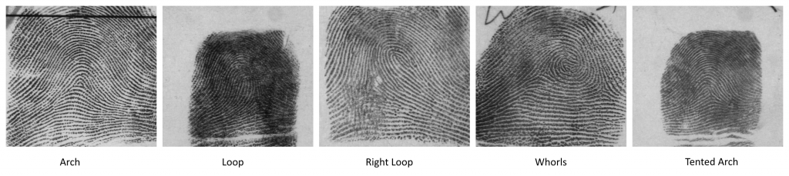

前回は評価を可視化してみました。
CNTKが進化している
MicrosoftがフォークさせたCaffeは完成度は高いのですが、2016年5月からメンテナンスが止まっています。 かたや、CNTKは現在進行形でソースが成長してます。 どちらもいい面悪い面があるのですが、CNTKの方がMicrosoftの本命でしょう。 なので、前回実施した指紋紋様分類をCNTKで実践してみます。 最近のCNTKの進化に追随しなければなりません。
準備
設定ファイル
CNTKファイルです。
をベースに構築します。 まず、作業ディレクトリを作ります。ここでは、ROOTフォルダとします。 ROOTフォルダの下に、一つフォルダを作り、その中に、AddTop5Layer.mel, AlexNet.cntk, AlexNet.ndl, Macros.ndl を任意のフォルダに展開します。 このフォルダをConfigフォルダとします。 次に、AlexNet.cntkを開き、下記の箇所を変更します。 [code] ConfigDir = “$RootDir$” [/code] を [code] ConfigDir = “$RootDir$/Config” [/code] 2カ所ある [code] minibatchSize=128 [/code] を [code] minibatchSize=32 [/code] [code] cropType=”Random” [/code] を [code] cropType=”Center” [/code] 2カ所ある [code] width=224 height=224 channels=3 [/code] を [code] width=224 height=224 channels=3 [/code] [code] cropRatio=0.875 [/code] を [code] cropRatio=0.875 [/code] 2カ所ある [code] meanFile=”$ConfigDir$/ImageNet1K_mean.xml” [/code] を [code] meanFile=”$ConfigDir$/ImageNet1K_mean.xml” [/code] 2カ所ある [code] labels=[ labelDim=1000 ] [/code] を [code] labels=[ labelDim=1000 ] [/code] に変更します。
画像ファイルリスト
Caffeの画像ファイルリストの記述方法は [code lang=”default”] <カレントディレクトリからの相対パス><半角スペース><0オリジンのラベル番号> [/code] でした。 一方、CNTKで、2016年5月に対応した、ファイルリストをサポートするImageReaderの入力形式は [code lang=”default”] <画像のフルパス><タブ><0オリジンのラベル番号> [/code] になります。 前回のファイルリストを少し加工して流用できるはずです。 また、これらのファイルリストを val_map.txt , train_map.txt という名前に変更し、Configフォルダにコピーします。 個人的にはフルパスの方が好感が持てます。 画像そのものは、システム中に一つだけであって、作業ディレクトリからのパスで変化するようでは、使い勝手が悪すぎるので… ImageReaderについての使い方は

を参考にしてください。 クロップ機能などが独特ですが… 指紋といえば、ごく一部の人間を覗いて全ての人間が手にもっている隆線によって形成される紋様です。 指紋を持っていない人間もごく一部に存在しますが… iPhoneのTouchIDで急激に認知度が向上した気がします。 特に日本では、指紋の採取というのは、人権団体とかの声とかプライバシー云々でいまいち悪のレッテルを貼られている感が否めません。 さて、指紋は古くから使われており、個人を識別する徴として、日本では拇印としてよく知られています。 個人を識別するだけなら、指紋以外に、虹彩、静脈、顔が有名です。 他にも掌紋、足紋もあります。
生体認証
この手の生物に備わる生体の特徴に基づいた認証を生体認証 (Biometrics) と呼びます。 指掌紋技術では、たくさんの企業が競争していますが、3M Cogent (アメリカ)**、Morpho (フランス)、NEC (日本)が三強です。 ここでいう三強とは、司法機関、入国管理など、大規模システムでの納入実績が大きい企業を指します。 (例えば、ロサンゼルス国際空港では、Morphoの指紋採取機器が入国管理ゲートにありますし、成田空港にはNECの指紋採取機器があります。) iPhoneの場合、AppleはAuthenTec社**を買収して、TouchIDを開発したようですが、これは指紋を読み取る機器の買収がメインだったと思われます。 指紋の採取の場合、光学センサーで読み取るのが主流ですが、AuthenTec社の場合は周波数で読み取るセンサーだったようで、それがiPhoneでの採用に繋がったのでしょう。 ですので、三強にAppleがない、というのは別に悪意があるわけではなく、この三強は、大規模システム、たとえば、数千万の指紋データから瞬時に個人を特定するなどの総合的な技術を持っています。TouchIDの場合、iPhoneに含まれる指紋データは一人のデータでかつ最大10本の指データです。大して大規模システムでは、入力指紋、つまり識別したい指紋1に対して候補となる指紋データは数千万にも上ることもあります。 事実、アメリカ国立標準技術研究所 (National Institute of Standards and Technology, NIST) の指掌紋技術コンテストでは、計測する内容にもよりますが、上位はこの三強が常です。 NEC、米国国立標準技術研究所(NIST)の指紋認証技術のベンチマークテストにおいて第1位の評価を獲得 Morpho places first in NIST 2014 MINEX fingerprint benchmark さらに、犯罪現場に残った指紋、いわゆる遺留指紋とデータベースに載っている人間から直接採取した指紋 (押捺指紋) との照合、また他の犯罪現場で採取した別の遺留指紋との照合など、指紋照合と言ってもいろんなパターンがあるわけです。 特に遺留指紋は現場に指全体がきれいに残っているなんてあまりなくて、別の指紋と重なっている、一部しか残っていないとかよくある話です。 これらの問題を解決する技術をトータルで持っているのが上位三強です。 とはいっても、ニッチな技術で攻めるのは間違っていなくて、AuthenTec社はそれが幸いしてAppleに評価してもらえたわけです。
特徴データ
さて、指紋、掌紋、足紋でも、他でもそうですが、採取した生体情報から、その生体情報を特徴付ける情報のみを抽出してデータ化します。 これを特徴データと呼んでいますが、指紋の場合、そのなかに特徴点 (Minutia) と呼ばれるものがあります。 特徴点が12個一致すれば、照合上、同一指紋とみなすことができます。 また、指紋においては、隆線 (芯線:Skeleton)も大事なデータですが、指紋の紋様自体も重要です。
紋様
紋様には様々な種類がありますが、人種によって、紋様毎の発現率が異なります。下記はその一例です。実際はもっと種類があります。 [table id=23 /]

紋様の一例
前置きが長くなりましたが、これらの紋様をディープラーニングで分類してみましょう。
準備1
今回、DeepLearningのために、GeForce GTX 750 Tiを入手しました。 というわけで、Caffeのビルド設定を変更します。 Pythonは有効にし、CpuOnlyBuildをfalse、UseCuDNNをtrueにします。 特に重要なのが、CudaArchitectureです。 GTX 750 TiのCompute Capabilityは5.0なので、compute_50,sm_50を設定します。 以上で、ソリューションをリビルドします。
準備2
次にデータですが、NISTが指紋データを教師情報と一緒に公開しています。 こんなの日本じゃありえません。素晴らしい。 下記からダウンロードできます。ただし、接続の調子が悪いのかタイムアウトすることが多々あります。 Special Database 4 - NIST 8-bit Gray Scale Images of Fingerprint Image Groups. Special Database 9 - NIST 8-bit Gray Scale Images of Mated Fingerprint Card Pairs. NIST Mated Fingerprint Card Pairs 2. Has 2,700 ten-print card pairs of rolled fingerprints (no plain impressions). 今回は、Special Database4を使います。4,9,14は無料ですが、他は有料だったりします。
入手したファイルを解凍すると、下記のような構成になっています。 [code] NISTSpecialDatabase4GrayScaleImagesofFIGS\sd04\png_txt\figs_0 NISTSpecialDatabase4GrayScaleImagesofFIGS\sd04\png_txt\figs_1 NISTSpecialDatabase4GrayScaleImagesofFIGS\sd04\png_txt\figs_2 NISTSpecialDatabase4GrayScaleImagesofFIGS\sd04\png_txt\figs_3 NISTSpecialDatabase4GrayScaleImagesofFIGS\sd04\png_txt\figs_4 NISTSpecialDatabase4GrayScaleImagesofFIGS\sd04\png_txt\figs_5 NISTSpecialDatabase4GrayScaleImagesofFIGS\sd04\png_txt\figs_6 NISTSpecialDatabase4GrayScaleImagesofFIGS\sd04\png_txt\figs_7 [/code] 各フォルダ内にpngとtxtファイルが500個ずつ含まれています。 学習にはfigs_0からfigs_6の3500枚の画像を使います。テストにはfigs_7を使います。 さて、データを見ていると指紋画像のサイズが512x512であることに気がつくと思います。 指紋認証の世界では512x512の500ppi (pixel per inch) が常識です。1000ppiもあります。 txtには、性別、紋様種別が含まれています。 このデータ群の紋様種別は、Whorls、Arch、Loops、Tented Arch、Right Loopの5種です。 これらを使って、画像のデータベース作成、学習、テスト、分類を実行します。 これら一連の流れを自動化したバッチを用意しました。

{kind=link}
これらを、png_txtフォルダ直下に展開し、下記の2点を修正します。
0.SetEnv.bat
CAFFE_ROOT、MINICONDA、ROOTFOLDERを環境に応じて変更します。
io.py
今回の実験では、入力画像を8bitにして扱うことでメモリ消費量を削減しているのですが、PythonのCaffeモジュールが8bit画像として、画像を入力できないため、ネットワークと入力データの整合性がとれません。 そのため、7.Classify.batを使うときだけ、**<Miniconda2_root>\Lib\site-packages\caffe\io.py**を修正します。 [code lang=”python”] def load_image(filename, color=True): [/code] を [code lang=”python”] def load_image(filename, color=False): [/code] と直します。 これで準備完了です。
実験
バッチを1から順に実行します。GPUを使えるなら、 1.CreateListFile.ps1 2.CreateDatabase.bat 3.MeanDatabase.bat 4.Train_GPU.bat 7.Classify.bat とコマンドプロンプトまたはPowerShellで順番に実行します。 ただし、7.Classify.batは引数に画像ファイルを指定します。 例えば、 [code lang=”batch”] 7.Classify.bat “D:\Works\NISTSpecialDatabase4GrayScaleImagesofFIGS\sd04\png_txt\figs_7\f1752_04.png” [/code] のような感じです。 4.Train_GPU.batを実行することで、学習とテストを同時に実行します。 その結果、精度を表すAccuracyが10%弱が、最終的に約80%まで向上していることがわかります。3500回の学習で10分くらいでした。 [code lang=”batch”] I0623 00:35:05.288350 6908 solver.cpp:337] Iteration 0, Testing net (#0) I0623 00:35:07.777075 6908 blocking_queue.cpp:50] Data layer prefetch queue empty I0623 00:35:09.379405 6908 solver.cpp:404] Test net output #0: accuracy = 0.148 I0623 00:35:09.382393 6908 solver.cpp:404] Test net output #1: loss = 1.61361 (* 1 = 1.61361 loss) [/code] が [code lang=”batch”] I0623 00:49:38.984040 6908 solver.cpp:317] Iteration 3500, loss = 0.304031 I0623 00:49:38.986039 6908 solver.cpp:337] Iteration 3500, Testing net (#0) I0623 00:49:42.858041 6908 solver.cpp:404] Test net output #0: accuracy = 0.788 I0623 00:49:42.860039 6908 solver.cpp:404] Test net output #1: loss = 0.465629 (* 1 = 0.465629 loss) I0623 00:49:42.864039 6908 solver.cpp:322] Optimization Done. I0623 00:49:42.869042 6908 caffe.cpp:223] Optimization Done. [/code] になります。 しかし、これでは、本当に正しく学習できるいるのかいまいちわからないため、7.Classify.batに学習に使った画像以外 (今回はfigs_7) から一枚を選んで、引数として渡して実行します。 結果として、f1751_08.pngの場合、 [code lang=”batch”] Loading file: D:\Works\NISTSpecialDatabase4GrayScaleImagesofFIGS\sd04\png_txt\figs_7\f1751_08.png Classifying 1 inputs. Done in 0.22 s. Saving results into output.npy #1 | 3 T | 84.0% #2 | 2 R | 11.8% #3 | 0 A | 2.1% [/code] T (Tented Arch) が一番高い確率を出力してます。画像に対応するテキストファイル Gender: M Class: T History: f1751_08.pct TA a2618.pct と見比べると、一致していることがわかります。
Conclusion
DeepLearningのネタは結構転がっていますが、指紋を使った実験はweb上では無いと思います。 既に論文でDeepLearningでの紋様分類は存在しましたが、外国の論文でした。 日本語としての記事としてはなかなかレアではないでしょうか？